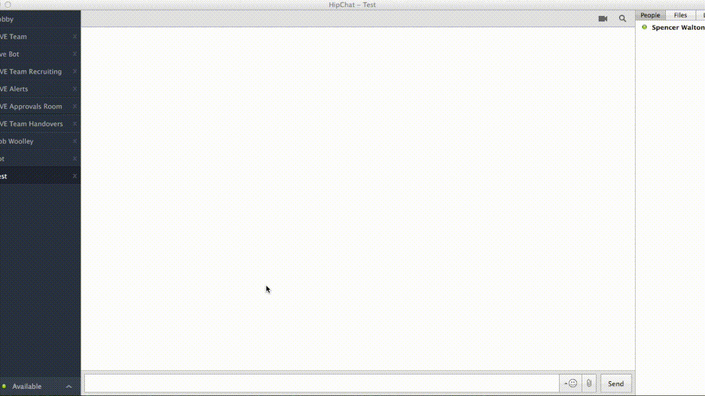
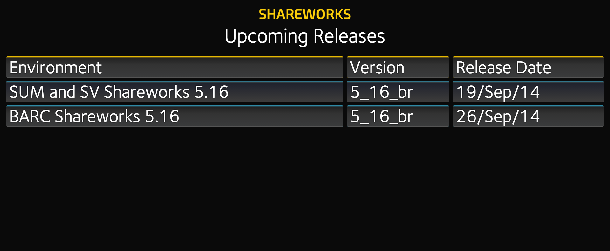

Created by Spencer Walton
'Veronica Mars' is a collection of four dashboards, built using the dashing framework.
The first dashboard monitors the statuses of the test sites - the response codes, last data refresh, version, and schema name. Double-clicking visits a site, and shift-clicking allows you to copy the database schema name. Sites will be green when up, and red when down.
This dashboard uses the Shareworks REST API to check the status of data imports for companies using AST. Any company that has no import in the last 24 hours turns red.
This dashboard displays an approximation of where the work (in jira form) is being created, by office. It uses a customized version of a community widget.
'LiveBot' is a chat bot built using the Hubot framework, and the Hipchat adapter. It uses Hipchat's Jabber/XMPP integration in order to communicate with an internally hosted instance of Hipchat.
The default frameworks were missing some features, so they were added manually:
LiveBot was made able to leave rooms - this required changing source code. A number of scripts were also added. The more significant ones are listed below.
When a jira key is mentioned in a room, LiveBot will hear it, and return the title and issue type, as well as a link to the jira.
The LIVE team uses a monitoring and alerting system built on opsgenie and sensu.
A feature was added to LiveBot so members of the live team could take the pager from the person on call for a period of time, using the opsgenie forwarding API.
A 'panic button' was also added, allowing people to alert the person on call about a critical jira.
Functions were added to allow LiveBot to return statistics involving jira types and timelines, using googlecharts and the jira SOAP gem.
LiveBot can also generate the approximate cost of downtime, by querying the database for the daily trade dollars, and the pingdom API for downtime.
Livebot was given functionality to download the Marketing Site and create a mirror, either on a local server or on s3. This used a shell script that would check if the website was up, downloading a new version if it was, then pushing the existing or new copy to the user specified location.
The Jira Report Card gives statistics on the jiras that a person or group of people raise. This is to show areas where improvement is needed (longer descriptions, more detail or planning) and where a person is strong (bug reports that lead to code fixes, multiple attachments). Statistics on the internal creators of tickets is important, as the higher the ticket quality, the faster it can be resolved.
Uses the opsgenie API to get how long each person was on call for during a time range, how many total pages they received, and how many were during off-hours, then generates a spreadsheet of this data.
A ruby gem used to simplify API calls to Shareworks, which was then used for the test harness. The test harness was written in ruby, using rspec. Tests the commands against expected values, proper formatting, and successful responses.
In order to have a consistent install pattern for setting up the Veronica Mars and LiveBot projects, Chef was used to create Vagrant machines customized with dependencies and files.
Using the Zendesk API and the Shareworks API wrapper gem, I checked for consistencies between companies, to ensure all companies were able to receive support through Zendesk.
Solium uses a monitoring and alerting system with 'traps' to catch errors and events that occur, such as a site outage or stalled transaction. I wrote a trap (using Ruby) that logs into Shareworks, follows redirects and navigates to the desired page, then checks for errors.
This is a simple page, using PHP with the jira API to retrieve a list of versions, then removing past releases, and sorting by date.
Using ruby and postgresql, I built a sample database to allow people to learn basic SQL without touching a critical database. It uses various constraints such as primary keys, foreign keys, and unique values. The database contains several tables, each containing 1000 unique records.